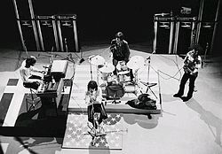
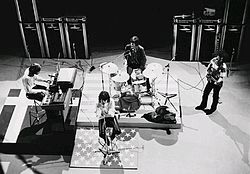
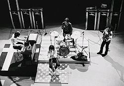

Intro
The Doors fue una banda de rock estadounidense, formada en Los Ángeles (California), en julio del año 1965 y disuelta en el año 1973. Junto a Jefferson Airplane, Grateful Dead y Pink Floyd, se convirtió en uno de los exponentes de la psicodelia de los años 60.
Aunque la carrera de The Doors terminó en 1973, su popularidad se ha mantenido. Según la RIAA , han vendido 32,5 millones de unidades certificadas en los Estados Unidos. La banda ha vendido más de 100 millones de álbumes en todo el mundo.1
Ray Manzarek y Robby Krieger han realizado giras como "Manzarek-Krieger" —para cuestiones legales, "Ray Manzarek y Robby Krieger de The Doors"— interpretando exclusivamente canciones del grupo original. The Doors fue la primera banda estadounidense en acumular ocho discos de oro consecutivos. En 1993, The Doors fue incluido en el Rock and Roll Hall of Fame.

Orígenes: 1965-1966
The Doors en Copenhague en 1968.
En 1964 Jim Morrison se encontraba en la playa de Venice, California, y encontró a un viejo compañero de la Universidad de UCLA, Ray Manzarek, quien era cuatro años mayor que él. Ahí mismo comenzaron una casual conversación y Morrison aprovechó para leerle a Manzarek la letra de «Moonlight Drive», un poema que Morrison acababa de escribir. Manzarek (fanático del blues y rock de la época) le pidió a Morrison que le cantara el tema, con el cual Manzarek quedó fascinado, y decidieron formar una banda.
Ray Manzarek ya estaba en una banda, llamada Rick And The Ravens con su hermano Rick, mientras que Robby Krieger y John Densmore tocaban en The Psychodelic Rangers y conocían a Manzarek de unas clases de meditación. En agosto, Densmore se unió al grupo y con algunos miembros de los Ravens y un bajista no identificado, grabaron el 2 de septiembre una demo de cinco temas. Esta demo fue parcialmente pirateada, y esa fue la única manera de conseguirla hasta su aparición en el Box Set de The Doors, publicado en 1997.
Ese mismo mes, el grupo reclutó al talentoso Robby Krieger y la alineación final —Morrison, Manzarek, Krieger y Densmore— estaba completa. La banda tomó su nombre de un verso del poeta William Blake: "If the doors of perception were cleansed, every thing would appear to man as it is: infinite." (Si las puertas de la percepción fueran depuradas, todo aparecería ante el hombre tal cual es: infinito), que también daba título al libro de Aldous Huxley, The Doors of Perception.
The Doors se diferenciaba de muchos grupos de rock de la época, porque no usaban un bajo en concierto, enfatizando también el hecho de haber sido influenciados por diferentes grupos de rock de la época, así como el destacado género blues. En vez de esto, Manzarek tocaba las melodías del bajo con la mano izquierda en su novedoso piano Fender Rhodes, una nueva versión del ya conocido piano Fender Rhodes, y las melodías del órgano con la mano derecha. Sin embargo, el grupo usó algunos bajistas en sus grabaciones de estudio, entre ellos Jerry Scheff, quien tocó luego en más de 1,100 conciertos para Elvis Presley (de 1969 hasta su muerte en 1977), así como Doug Lubahn, Harvey Brooks, Kerry Magness, Lonnie Mack y Ray Neapolitan.
El logotipo de The Doors, diseñado por un asistente de Elektra Records, apareció por primera vez en su álbum de debut en 1967.
Muchas de las canciones originales se hicieron en conjunto. Morrison aportaba las letras y parte de la melodía, y el resto contribuía con el ritmo y el sentimiento de la canción. Mientras Morrison y Manzarek caminaban por la playa en California, vieron pasar a una mujer negra, y Morrison escribió la letra de "Hello, I Love You" esa misma noche, refiriéndose a ella como la "joya oscura" (dusky jewel). Algunos criticaron la canción por su parecido con el hit de The Kinks "All Day and All of the Night" (1965), y el vocalista de este grupo, Ray Davies demandó a The Doors.
Para 1966, el grupo tocaba en el club The London Fog, y ese mismo año se cambió al prestigioso Whisky a Go Go.2 El 10 de agosto el presidente de Elektra Records, Jac Holzman, los vio debido a la insistencia del vocalista de Love, Arthur Lee, cuyo grupo también estaba en Elektra. El 18 de agosto, después de que Holzman, y el productor Paul A. Rothchild vieran dos actuaciones de la banda en el Whisky A Go Go, la primera algo irregular, pero la siguiente simplemente hipnotizante, The Doors firmó con Elektra. Así empezó lo que sería una significativa relación entre la banda, Rothchild y el ingeniero Bruce Botnick. El 21 de agosto del mismo año, el club despidió a la banda por un incidente en una presentación de "The End", que vendría a anunciar toda la controversia que seguiría al grupo en sus años de historia. Morrison, gritó, en la parte "edípica" de la canción: "Father? Yes son?, I want to kill you", "Mother? I want to fuck you" ("¿Padre? Sí hijo?, Quiero matarte", "¿Madre? Quiero follarte").